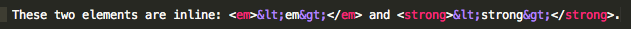
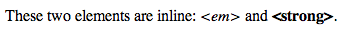
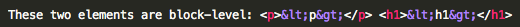
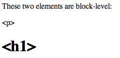
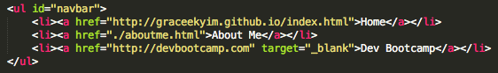
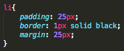
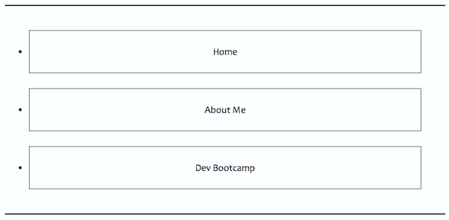
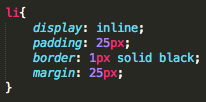
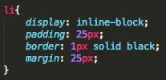
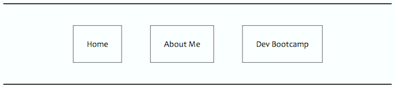

Saturday, May 24, 2014
CSS Display: Inline vs. Inline-Block
Introduction to CSS Property: Display
When you' re designing a website, you will occasionally want to change the
display value of inline or block-level elements. This is particularly useful for creating navigation bars, like the one at the top of this page.
Upon first glance it appears as if the links are inline elements, but once you look at the HTML file you'll see that the links are in <li> tags, which are block-level elements. This is where the
display property comes in. In order to change the appearance of inline or block-level elements, you can change the CSS property called
display. There are many values available for this property, but today we are going to focus on two: inline and inline-block.
In order to explain these two values, we'll need to start by reviewing the difference between inline and block-level elements.
HTML Elements: Inline
Inline elements allow other elements to sit next to them and do not start new lines. They register margins and padding to the left and right, but ignore margins and padding on the top and bottom. Some examples of inline elements are <em>, <strong>, <a> and <img>. Here's a closer look at <em> and <strong> elements:
HTML:

RESULT:

HTML Elements: Block-Level
Block-level elements always start new lines and do not allow other elements to sit next to them. They register margins and padding on all sides (top, bottom, left and right). Some examples of block-level elements are <ol>, <li>, <h1> and <p>. Here's a closer look at <p> and <h1>.
HTML:

RESULT:

CSS Property: display
Now that we've reviewed inline and block-level elements, let's explore the CSS property:
display and how it can be used to change these elements. Since the navigation bar at the top of this page was changed using the
display property, we'll use that as our example.
HTML:

In the HTML, you'll notice that the links are enclosed in <li> tags, making them block-level elements.
display: block
Let's start off by looking at the
display property value:
block. Since the links are enclosed in <li> tags, the
display value has already been set to block.
Note: A border was added to the list elements to make it easier to read.
CSS (display: block):

RESULT (display: block):

When the
display value is set to block, you'll notice that each element starts on a new line. Also, the elements are registering margins and padding on all sides and not allowing other elements to sit next to them.
display: inline*
Let's try changing the
display property value to
inline.
CSS (display: inline):

RESULT (display: inline):
When the
display value is set to inline, you'll notice that all the elements appear on one line. The elements are registering margins and padding on the left and right, but not on the top or bottom.
*display: inline was the lucky winner for the navigation bar on this page!
display: inline-block
Let's try changing the
display property value to
inline-block.
CSS (display: inline-block):

RESULT (display: inline-block):

When the
display property value is set to inline-block, you'll notice that the elements are adopting properties of inline and block-level elements. Not only are the elements allowing other elements to sit next to them, they are accepting padding for all sides (top, bottom, left and right).
Summary
Now that we've reviewed the differences between inline and inline-block elements, let's summarize what we learned:
| display: inline |
display: block |
display: inline-block |
| Allows elements next to it |
Always starts new line |
Allows elements next to it |
| Registers margins/padding on left/right only |
Registers margins/padding on all sides |
Registers margins/padding on all sides |
Now it's your turn! Try using display: inline, block or inline-block in your next webpage.